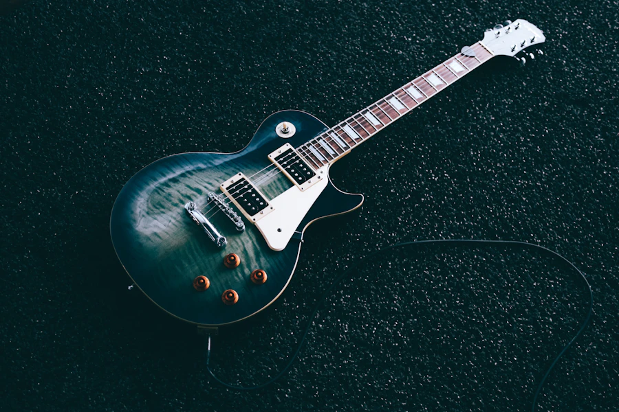
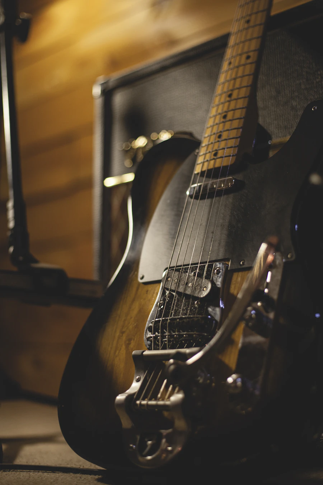

У каждой
гитары
своя
история.
Мы помогаем инструментам снова звучать. Ремонтируем, реставрируем и создаём гитары на заказ, уделяя внимание каждой детали.
Демоверсия для презентации. Фотографии иллюстративные.
GUITARSРЕМЕСЛО И ЗВУК / SPB
За звуком
стоит мастер.
Гитара - не просто дерево, струны и фурнитура. Это инструмент с характером, в котором важна точность каждой детали.
Мастерская Александра Даева объединяет ремонт, реставрацию и изготовление инструментов. Здесь берутся и за сложные случаи, в том числе за те, от которых другие мастера предпочитают отказаться.
Ежегодно через мастерскую проходят сотни инструментов. Опыт постоянно передаётся от мастера к мастеру, а ремесло развивается вместе с музыкой.
Три стороны
одного ремесла.
От точной настройки инструмента до гитары, созданной по индивидуальному замыслу.
Ремонт
и настройка
Отстройка, замена ладов, электроника, ремонт трещин и восстановление сложных повреждений.
Подробнее ↗
Изготовление
гитар
Акустические и электрогитары по индивидуальным пожеланиям и вдохновению классическими образцами.
Посмотреть концепцию ↗Обучение
мастерству
Передача опыта и обучение тех, кто хочет освоить изготовление музыкальных инструментов.
Задать вопрос ↗
Инструменты
крупным планом.
Предлагаемая подача портфолио: реальные инструменты, история каждого ремонта и внимание к деталям.

* Иллюстративные изображения для демонстрации дизайна. Для финального сайта здесь будут фотографии настоящих работ Daev Guitars.
Работа, которую
можно услышать.
Хорошая настройка не должна привлекать внимание к себе. Она должна дать музыканту свободу играть. Поэтому важен каждый лад, каждый порожек, каждый миллиметр высоты струн.
Ремонт начинается с осмотра инструмента: мастер определяет проблему, обсуждает варианты решения и только после этого приступает к работе.
Обсудить инструмент ↗
Хороший инструмент
заслуживает
второй жизни.
Честно
о главном.
Понятный ориентир стоимости. Окончательный объём работ определяется после осмотра инструмента.
* Ориентиры с действующего сайта мастерской на момент подготовки концепции. Актуальные цены необходимо подтвердить перед публикацией.
Дадим
гитаре голос.
Расскажите, что случилось с инструментом, или обсудите идею новой гитары. Перед визитом в мастерскую лучше предварительно связаться с мастером.
Написать в Telegram ↗